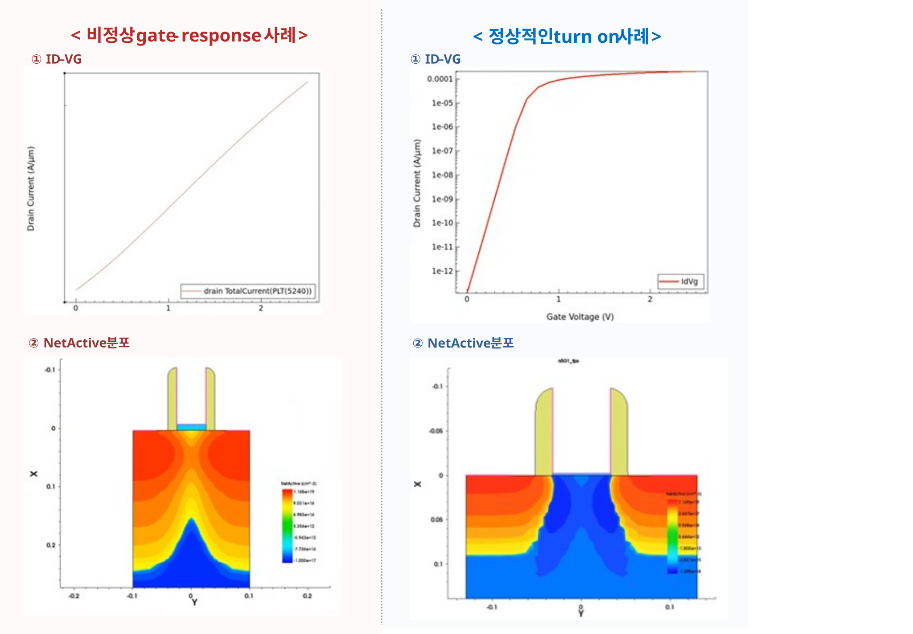
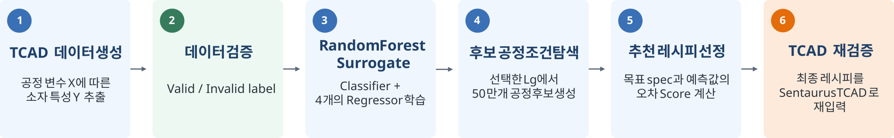
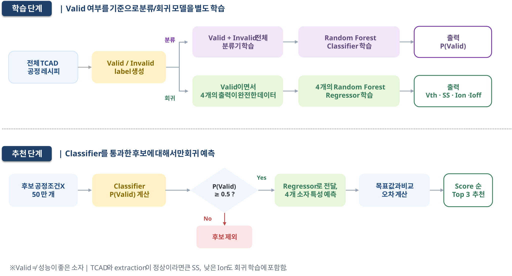
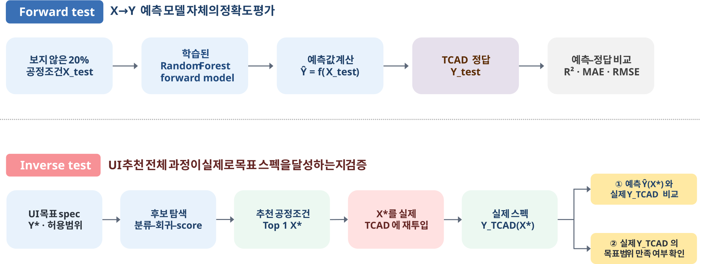
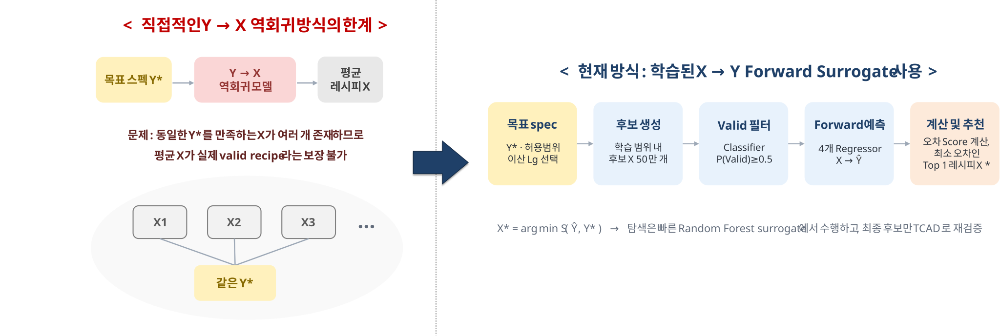
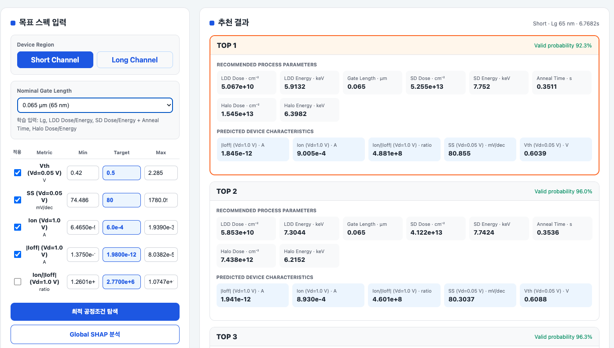
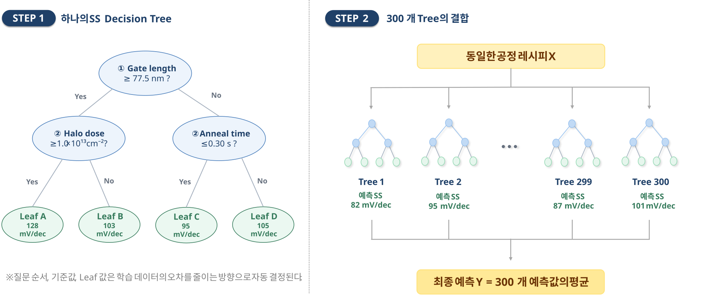
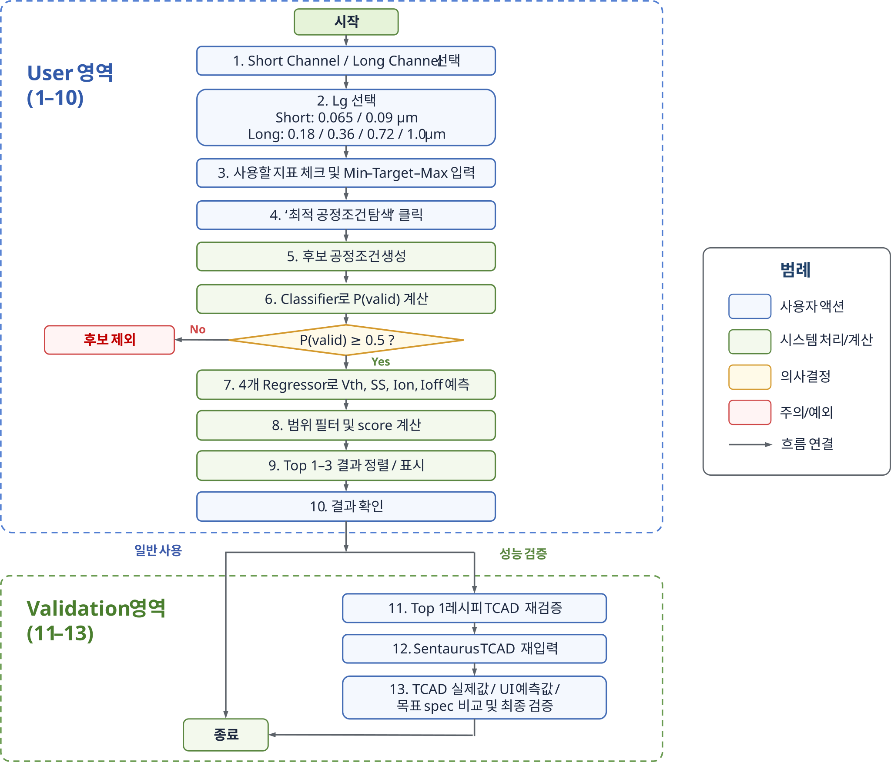

TCAD 데이터와 Random Forest surrogate model로 공정 설계공간을 탐색하고, 최종 후보를 TCAD로 재검증하는 역설계 프레임워크
팀 대전야호김두형 · 김상윤 · 김정필 · 박상헌 · 이지연2026.09.01
안녕하세요, 대전야호 팀입니다. 저희는 원하는 소자 특성을 입력하면 그에 맞는 공정 레시피를 추천하고, 그 결과를 TCAD로 다시 검증하는 역설계 시스템을 만들었습니다.
서론
왜 이 주제인가 — 문제점과 해결 방향
왜 이 주제인가
소자 특성은 공정조건(Gate Length, implant Dose/Energy, 열처리 …)이 결정 → 확인하려면 TCAD 시뮬레이션 필요
공정변수가 늘수록 조합이 기하급수 증가 → 전 영역 직접 계산은 시간·자원상 불가능
문제점
방향 불일치 — TCAD는 "공정 → 특성", 설계자는 "원하는 특성 → 공정"
탐색 비효율 — 기준점 없이 넓게 훑으면 TCAD 자원 낭비
해결 방향. TCAD 결과를 학습한 surrogate model로 유망한 공정 후보만 빠르게 추림 → 최종 후보만 TCAD로 재검증하는 역설계 프레임워크
① 유효한 공정조건 구분② 요구 스펙에 가까운 빠른 추천③ TCAD 재입력 시 정확도 유지
반도체 공정조건이 소자 특성을 결정하기 때문에, 특성을 확인하려면 TCAD 시뮬레이션을 돌려야 합니다. 그런데 공정변수가 늘면 조합이 기하급수로 늘어서 전부 계산하는 건 불가능합니다. 더 큰 문제는 방향입니다. TCAD는 공정조건에서 특성으로 가는데, 설계자는 반대로 원하는 특성에서 공정조건을 알고 싶어 합니다. 그래서 저희는 TCAD 결과를 학습한 예측 모델로 유망한 공정 후보만 빠르게 추려내고, 최종 후보만 TCAD로 다시 검증하는 역설계 시스템을 만들었습니다.
Vth · SS — Vd 0.05 V ID–VG Ion · Ioff — Vd 1.0 V (Vg 2.5 V / 0 V)
대상 소자는 2차원 planar NMOS입니다. 게이트를 형성한 뒤 LDD, Halo, 스페이서, 소스·드레인 주입과 어닐링을 거칩니다. 저희가 예측하는 특성은 문턱전압 Vth, subthreshold swing, on 전류와 off 전류 네 가지입니다.
Long vs Short 분리
왜 두 모델로 나눴나 — 공정 차이
100 nm 이하에서 SCE(Drain 전계가 Source barrier에 간섭) → 비정상 turn-on · Vth 추출 실패 · SS 수천 mV/dec. 원인은 250 nm급 공정을 게이트 길이만 축소한 것.
항목
Long 180–1000 nm
Short 65 / 90 nm
Gate oxide
기존 두께
2.0 / 2.5 nm 박막화
Halo implant
불필요
Dose/Energy 변수 추가
Annealing
고정
입력변수로 포함
입력 공정변수
5 개
8 개
→ 입력변수 구성이 달라 하나로 못 묶음 → Short / Long 독립 모델 bundle

그림 2 · 정상 vs 비정상 ID–VG 및 NetActive 분포
게이트 길이를 100 nm 아래로 줄이자 문제가 생겼습니다. 짧은 채널에서는 드레인 전계가 소스 쪽 barrier까지 영향을 줘서, 게이트를 올려도 정상적으로 켜지지 않고 문턱전압 추출이 실패하거나 SS가 수천 mV/dec까지 치솟았습니다. 원래 공정이 250 nm급 기준이라 게이트 길이만 줄인 게 원인이었습니다. 그래서 짧은 채널에서는 세 가지를 바꿨습니다. 게이트 산화막을 2 나노 수준으로 얇게 하고, 채널 중앙 barrier를 잡기 위해 Halo 주입의 도즈와 에너지를 새 변수로 넣고, thermal budget에 민감해진 어닐링도 입력에 포함했습니다. 결과적으로 긴 채널은 입력변수 5개, 짧은 채널은 8개로 구성이 완전히 달라졌기 때문에, 하나로 묶지 않고 Short와 Long 모델을 따로 학습했습니다.
전체 시스템 흐름
전체 Flow와 모델 선택

그림 5 · TCAD 데이터 생성 → 역설계 추천 → TCAD 재검증 (6단계)
왜 Random Forest
데이터가 수치형 표 형식(5~8 변수)·약 7,800개·변수마다 물리적 의미 명확 → 딥러닝의 복잡도·튜닝 부담이 과함
비선형·상호작용 학습 · 낮은 전처리 부담 · SHAP·Feature Importance 해석 용이 · 모델당 트리 300개
전체 흐름입니다. 먼저 TCAD로 공정조건과 특성 데이터를 만들고, 계산이 정상인지 Valid/Invalid 라벨을 답니다. 이 데이터로 공정을 넣으면 특성을 예측하는 Random Forest surrogate를 학습합니다. 사용자가 목표 스펙을 넣으면, 학습 범위 안에서 만든 후보 50만 개를 이 모델로 순식간에 평가해 목표에 가장 가까운 레시피를 뽑고, 최종적으로 TCAD에 다시 넣어 확인합니다. Random Forest를 고른 이유는, 데이터가 수천 개 규모의 표 형식이고 변수마다 물리적 의미가 뚜렷해서 딥러닝은 과했기 때문입니다. Random Forest는 비선형 관계를 잘 잡고, 전처리 부담이 적고, SHAP으로 변수 영향을 해석할 수 있습니다.
분류기 = Valid+Invalid 전체 학습 / 회귀기 = Valid & 4출력 정상 레시피만

그림 4 · 학습(분류=전체 / 회귀=Valid만)·추천(P(valid)≥0.5) 구조
학습 데이터는 Short 약 5천 개, Long 약 2,750개 레시피입니다. Sentaurus에서 계산이 실패했거나 출력이 누락된 레시피를 Invalid로, 정상 추출된 걸 Valid로 라벨했습니다. 주의할 점은 Valid가 성능이 좋다는 뜻이 아니라는 겁니다. SS가 크든 누설이 크든, 계산과 추출만 정상이면 Valid입니다. 분류기는 전체로, 회귀기는 Valid 레시피만으로 학습합니다.
Forward test — X→Y
예측 모델 자체의 타당성 검증

그림 11 · Forward test(상단) — 보지 않은 X_test로 예측 정확도 측정
방법 · 의미
80% training / 20% hold-out test (random_state 42)
분류: 클래스 비율 유지 stratified split / 회귀: 동일 index
예측 모델 자체의 정확도 — 역설계 성능을 직접 의미하진 않음
구체 R²·MAE 수치 → 결론 슬라이드에서 제시
모델을 두 가지로 검증했습니다. 첫 번째는 Forward test입니다. 데이터를 80대 20으로 나눠서, 20%는 학습에 전혀 쓰지 않고 예측 오차만 측정합니다. 분류기는 Valid·Invalid 비율을 유지하도록 나누고, 네 개 회귀기는 같은 테스트 레시피에서 평가합니다. 이 시험은 예측 모델 자체가 공정과 특성의 관계를 제대로 배웠는지 보는 기반 시험이고, 구체적인 수치는 뒤 결론에서 함께 보여드리겠습니다.
Inverse test — Y→X→TCAD
Y→X 검증을 한 이유 + 사용자 UI
왜 Inverse test인가 — 우리의 목적
Forward는 "공정 → 특성"이 맞는지만 확인
추천이 실제 TCAD에서 달성되는지는 별도 검증 필요
실제 설계 사양 목표 300건 → Top 1 추천 → Sentaurus 재입력 → ① 예측 vs 실제 ② 목표범위 충족

그림 6 · 직접 Y→X 대신 X→Y surrogate + 후보 탐색

그림 7 · 목표 스펙 입력 → 추천 공정조건·예상 특성 (Top 3)
두 번째가 저희의 진짜 목적에 해당하는 Inverse test입니다. 사용자가 UI에 목표 스펙을 넣으면 추천이 나오는데, 그 추천이 실제 TCAD에서도 달성되는지는 Forward test로는 알 수 없습니다. 그래서 실제 설계에서 요구되는 스펙 300건을 목표로 넣고, 나온 Top 1 레시피를 Sentaurus에 다시 입력해서, 모델 예측과 실제 결과의 오차, 그리고 처음 요청한 목표 범위에 들어오는지를 확인했습니다. 화면이 실제 UI인데, 목표를 입력하면 추천 공정조건과 예상 특성이 Top 3까지 나옵니다.
SHAP + 미흡 부분 분리
SHAP를 한 이유 · 한계의 분리
Long 모델 SHAP: 물리 경향 교차 확인
출력
최대 기여 변수
관찰 방향
Vth
Lg 32.1%
짧을수록 ↓
Ion
Lg 59.8%
짧을수록 ↑
Ioff
Lg 40.6%
짧을수록 급증
SHAP은 Long 모델에서 수행. 모델 관계의 설명이지 인과관계의 증명은 아님.
왜 SHAP
RF가 잘 맞혀도 어떤 변수가 결과를 움직였는지 모르면 물리 검토 불가
변수별 기여도·방향 정량화 → 물리 경향과의 일관성 점검, 목표와 어긋날 때 점검 변수를 안내
미흡 부분 분리
Long — 네 출력 안정 → 추천 도구
Short — SCE 경계 Vth·SS 오차 → Ioff 배수오차 ≈60× 증폭 → 추가 검증 후보를 좁히는 탐색·진단 도구
Long 모델에서는 SHAP으로 어떤 공정변수가 예측값을 움직였는지 확인하고, 그 방향을 알려진 소자물리 경향과 대조했습니다. 예를 들어 게이트 길이가 짧을수록 Vth는 낮아지고 Ioff는 커지는 방향이 나타났습니다. 다만 SHAP은 모델이 학습한 관계를 설명하는 도구이지 인과관계를 증명하는 것은 아닙니다. 이와 별도로 Inverse TCAD 재검증 결과를 보면, 긴 채널은 추천 도구로 활용할 수 있지만 짧은 채널은 SCE 경계에서 오차가 커지고 특히 누설전류가 크게 벌어집니다. 따라서 Short는 정답을 주는 도구가 아니라 추가 검증 후보를 좁히는 탐색·진단 도구로 정의합니다.
핵심 결과 요약 → 의의
결과와 의의
Forward prediction (표 17)
모델
Vth
SS
Ion
Ioff
Long
.986 / 6.2 mV
.994 / 2.66
.994 / .010 dec
.794 / .267 dec
Short
.960 / 28 mV
.831 / .207 dec
.987 / .609 dec
.996 / .605 dec
표기 = R² / MAE(Vth·SS) 또는 log RMSE(Ion·Ioff). 분류 balanced acc: Short 98.35% / Long 99.19%
의의. TCAD 대체가 아니라 재검증 가치가 높은 후보를 빠르게 선별하는 설계 지원 도구 — Long = 추천 / Short = 탐색·진단. 추천 → TCAD 재검증 → 데이터 재편입 반복으로 신뢰성·적용 범위가 점진 확대되고, 제한된 TCAD 자원을 목표 달성 가능성 높은 후보에 집중시킨다.
결론입니다. Forward test에서 Long은 Vth·SS·Ion이 매우 안정적이었고, Ioff는 R² 0.794 및 log RMSE 0.267 decade로 다른 Long 출력보다 상대적으로 불확실성이 큽니다. 문턱전압 오차는 평균 6.2 밀리볼트였습니다. Short는 Vth와 전류의 전체 경향은 학습했지만, 특히 Ioff의 log RMSE가 0.605 decade로 커서 R²만으로 성능을 과대평가하면 안 됩니다. 분류기의 balanced accuracy는 두 모델 모두 98퍼센트를 넘습니다.
핵심은 Inverse test입니다. 목표 300건에서 나온 274개 고유 레시피를 TCAD에 다시 넣었더니 전부 정상 계산됐습니다. Long은 문턱전압 오차 10 밀리볼트, on-current는 거의 일치했고 목표 범위 만족률도 대부분 100퍼센트에 가깝습니다. Short는 on-current는 안정적이지만 누설전류가 크게 벌어졌습니다.
그래서 이 시스템의 의의는, TCAD를 대체하는 게 아니라 수많은 공정 후보 중에서 TCAD로 재검증할 가치가 높은 것을 빠르게 골라주는 데 있습니다. 검증된 데이터를 다시 학습에 넣으면서 반복할수록 신뢰성과 적용 범위가 넓어집니다.
향후 개선
개선 여지와 발전 가능성
순위
개선 항목
기대 효과
1
65/90 nm 경계·급변 영역 중심 추가 DOE / active learning
적은 TCAD 추가로 Short 오차 집중 감소
2
Bias sweep 범위 확장 (0–2.5 V → 확대)
고정 동작점 기준 일관 추출
3
Long-channel에 Halo·gate oxide 두께 변수 추가
안정성 유지하며 표현력 확장
4
트리 분산 / conformal prediction 기반 불확실성 표시
Top 1 과신 방지, 재검증 우선순위
데이터가 쌓일수록 surrogate 정확도와 적용 범위가 넓어지는 구조 → 발전 여지가 크다.
향후 개선입니다. 짧은 채널 경계 영역에 데이터를 집중 보강하고, bias sweep 범위를 넓히고, 긴 채널에도 Halo와 산화막 두께를 변수로 추가할 계획입니다. 또 Top 1 추천을 과신하지 않도록 불확실성 지표를 함께 제공하려 합니다. 데이터가 쌓일수록 정확도가 올라가는 구조라 발전 여지가 큽니다. 감사합니다.
A1 · 수치 변환
전류·SS의 log₁₀ 학습
Ion(~10⁻⁴ A)·Ioff(~10⁻¹² A)를 linear로 함께 학습 → 큰 전류가 loss 지배, 작은 전류 오차 무시
예: 예측 10⁻¹² vs 실제 10⁻⁶ A → 6 decade 차이지만 linear squared error ≈ 10⁻¹²로 극소
대응: 전류는 log₁₀(|I|), SS도 극단값 완화 위해 log₁₀(SS) 학습
Vth는 linear 유지 · UI 출력 시 10의 거듭제곱으로 복원
전류가 여러 order로 변해서 그대로 학습하면 큰 값이 손실을 지배합니다. 그래서 전류와 SS는 로그 공간에서 학습했습니다.
A2 · Random Forest 동작
Random Forest 동작 원리

그림 3 · TCAD 공정변수로 구성한 Random Forest 개념도
핵심
각 트리: bootstrap 표본 + node마다 "어떤 변수를 어떤 기준값으로 나누면 오차가 최대로 줄까" 반복
leaf에 그 영역의 평균값 저장
최종 예측 = 300개 트리 예측값의 평균 (분류는 확률 종합)
랜덤 포레스트는 서로 다른 표본으로 학습한 결정 트리 300개의 평균입니다. 각 트리는 오차를 가장 크게 줄이는 분기를 반복해 만듭니다.
A2·5 · UI 탐색 flow
UI 기반 공정조건 탐색 flow

그림 8 · User 영역(1–10) 탐색 → Validation 영역(11–13) TCAD 재검증
단계 요약
1–3 · Short/Long·이산 Lg·지표 Min–Target–Max 입력
5–6 · 후보 생성 → Classifier P(valid) ≥ 0.5 필터
7–9 · 4개 Regressor 예측 → 범위 필터·score → Top 1–3
11–13 · Top 1 TCAD 재입력 → 실제값·예측값·목표 spec 비교
사용자는 채널과 게이트 길이를 고르고 원하는 지표의 범위를 입력합니다. 시스템이 후보를 만들어 분류기로 거르고 회귀기로 예측해 Top 1–3을 보여주고, 성능 검증 단계에서는 Top 1을 TCAD에 다시 넣어 실제값과 비교합니다.
A3 · 평가 지표
평가 지표 정의
지표
정의 · 해석
적용
R²
실제값 변동 중 모델이 설명한 비율 (정확도 %로 해석 안 함)
Vth·SS·log current
MAE / RMSE
실제 단위 오차 / 큰 오차·tail에 민감
Vth·SS
log MAE·RMSE
log₁₀ 공간 오차 (1 decade = 10배, 0.301 ≈ 2배)
Ion·Ioff
목표범위 만족률
TCAD actual이 min–max 안에 든 비율 (조건부 보조지표)
inverse suite
Vth·SS는 실제 단위로, Ion·Ioff는 로그 공간 오차와 배수오차로 봅니다. R²는 보조 지표입니다.
A4 · Forward 성능 상세
Forward prediction 성능 (표 17)
모델
Vth
SS
Ion
Ioff
Short
R² 0.960 / MAE 28.0 mV
R² 0.831 / logRMSE 0.207
R² 0.987 / logRMSE 0.609
R² 0.996 / logRMSE 0.605
Long
R² 0.986 / MAE 6.20 mV
R² 0.994 / MAE 2.66
R² 0.994 / logRMSE 0.010
R² 0.794 / logRMSE 0.267
분류기 balanced accuracy Short 98.35% / Long 99.19% · ROC-AUC 99.93% / 99.92%
Short Ion·Ioff는 높은 R² + 큰 logRMSE 공존 → 경향은 학습, 경계 레시피 전류오차 잔존 → forward R²만으로 역설계 성능 과대평가 금지
Long은 네 출력 모두 안정적입니다. Short는 Ion·Ioff에서 R²는 높지만 로그 오차가 커서, 이 수치만으로 역설계 성능을 낙관하지 않았습니다.
A5 · Long inverse 상세
Long-channel inverse recommendation
출력별 성능 (175개 고유 레시피)
출력
설명력
평균오차
Vth
R² 0.935
MAE 10.2 / RMSE 18.6 mV
SS
R² 0.685
MAE 1.47 / RMSE 2.50
Ion
logR² 0.982
logMAE 0.017 (≈1.04×)
Ioff
logR² 0.920
logMAE 0.282 (≈1.92×)
목표범위 만족률
Vth
SS
Ion
Ioff
98.5%
100%
100%
76%
조건부 결과 — test suite 한정. 200개 요청 → 175개 고유 레시피 전부 정상 계산 → 전체 workflow 실현 가능성 입증.
Long은 200개 요청에서 175개 레시피가 나왔고 전부 정상 계산됐습니다. Vth 10 mV, SS 1.5 mV/dec, on-current는 거의 일치했습니다.